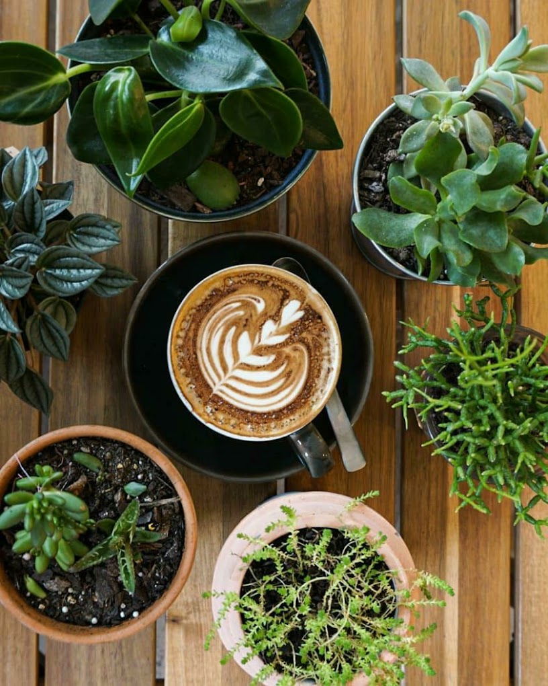
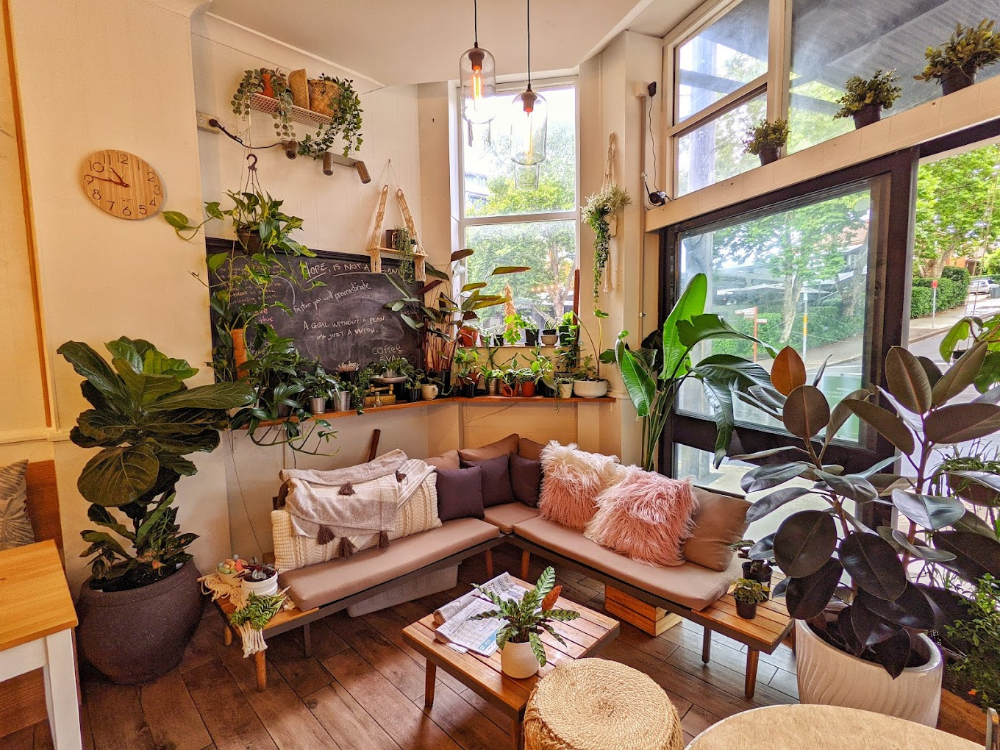
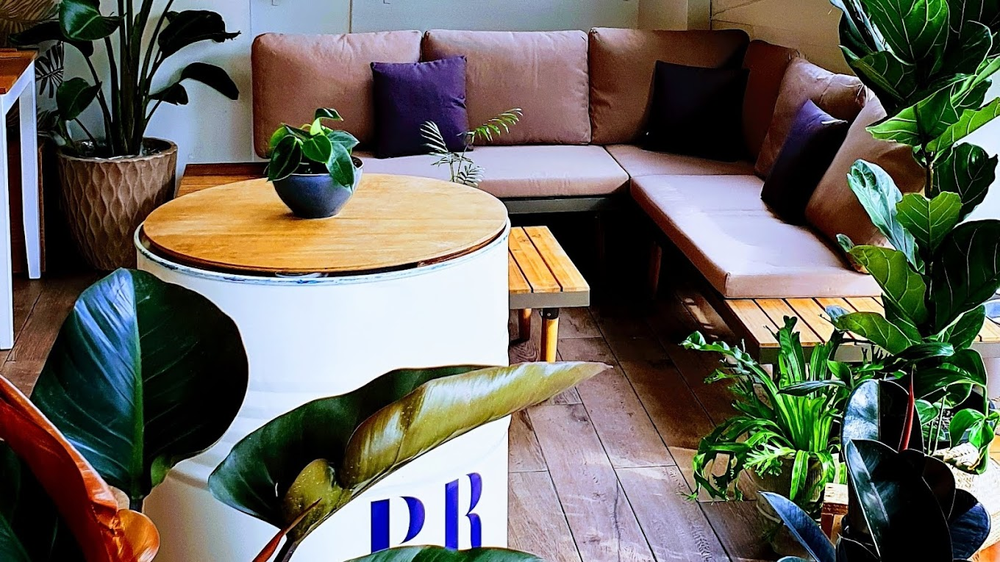
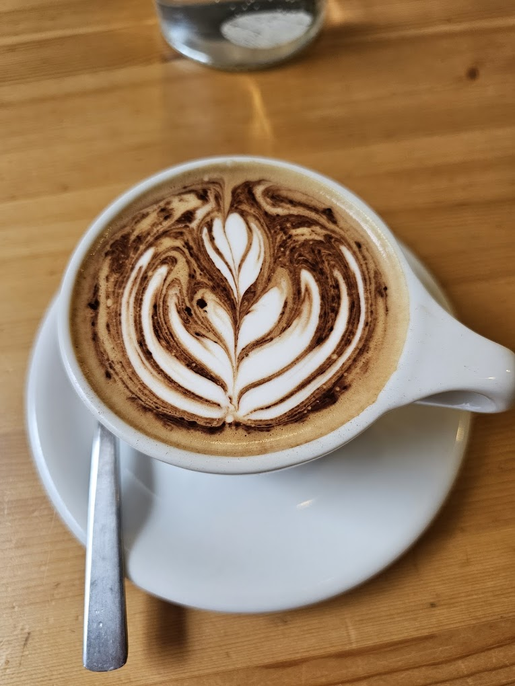
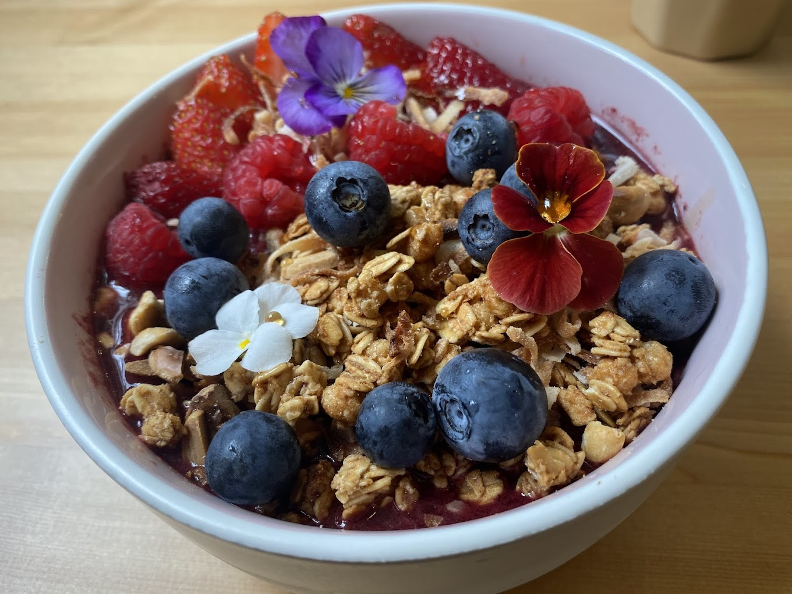
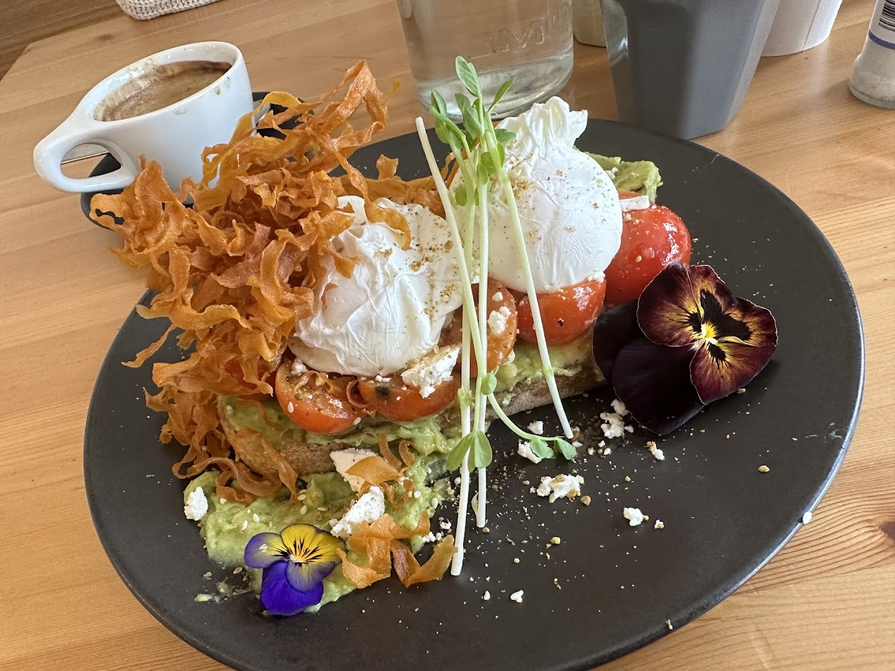
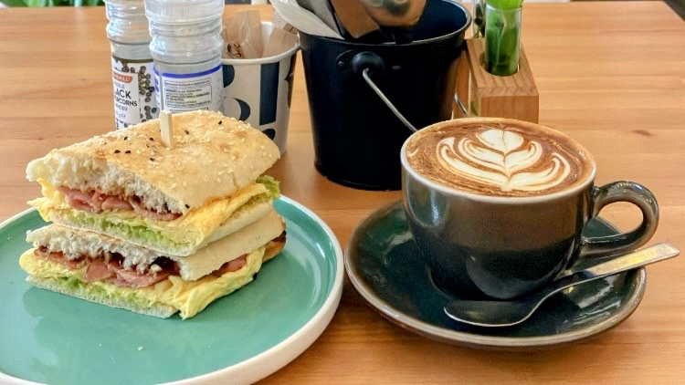

173 Blues Point Rd · North Sydney
Specialty brews, fresh food, and a leafy escape. Crafted by a barista who treats every cup as a canvas.



Tucked away on Blues Point Rd between McMahons Point and North Sydney, The Foliage Cafe is a leafy retreat from the everyday. Light wood furniture, trailing greenery, and the kind of warmth that only comes from people who genuinely love what they do.
We know our regulars by name and their order by heart. Whether you're grabbing a quick takeaway on the way to Victoria Cross station or settling in for a long brunch, this is your place.
Proud members of the North Sydney Council Better Business Partnership — committed to sustainability and making our corner of the neighbourhood a little greener, in every sense.
Every cup tells a story. From single origin pour overs to silky espressos, our barista brings years of craft and genuine care to every serve.
Dialled in every morning. Rich, balanced, and pulled with precision using our seasonal blend.
Hand-brewed single origins that highlight terroir and processing. Made to order, timed and weighed.
Slow-dripped over 12 hours. A smooth, complex concentrate with naturally sweet notes.
Every cup is a canvas. Rosettas, tulips, and sometimes something entirely new.



Step off Blues Point Rd into a plant-filled sanctuary designed to make you slow down and stay a while.
Pablo & Rusty's beans, dialled in daily. Espresso, pour over, cold drip — real craft in every cup.
From the Big Breakfast to our Superfood Bowl. Vegan, dairy-free, and hearty options all day.
A neighbourhood cafe in the truest sense. We remember your order and save your favourite spot.
Doors Open
Specialty Beans
Cold Drip
Bad Coffees
A short walk from Victoria Cross station, right on Blues Point Rd.
173 Blues Point Rd, North Sydney NSW 2060
| Monday – Friday | 6:30 am – 3:00 pm |
| Saturday – Sunday | 7:00 am – 2:00 pm |